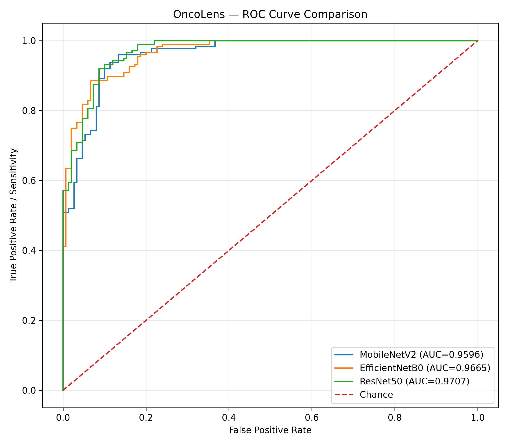
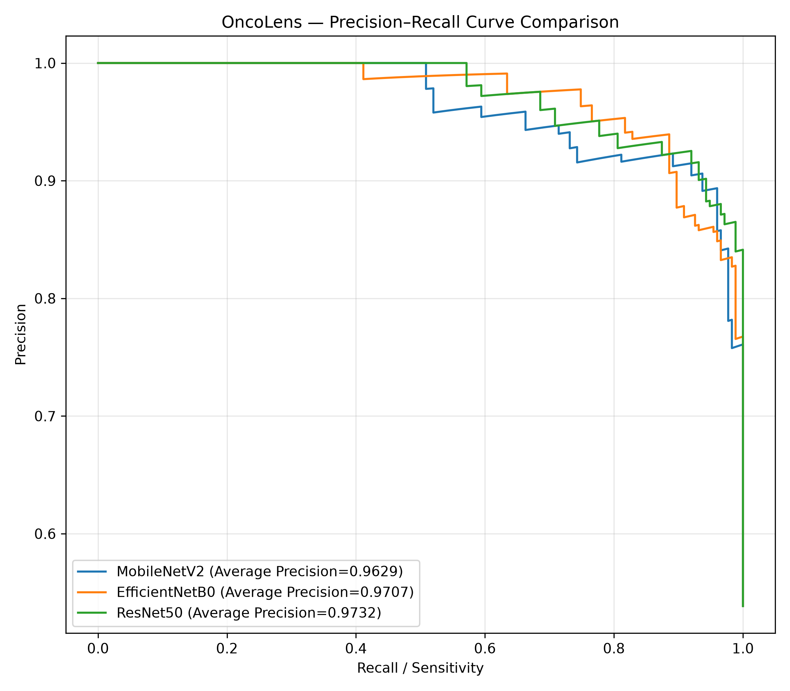

Positive class: Cancer. Negative class: Non-cancer.
| model | test_images | accuracy | precision | sensitivity_recall | specificity | f1_score | balanced_accuracy | mcc | roc_auc | pr_auc_average_precision | brier_score | log_loss | tn | fp | fn | tp |
|---|---|---|---|---|---|---|---|---|---|---|---|---|---|---|---|---|
| MobileNetV2 | 325 | 0.9046 | 0.9045 | 0.9200 | 0.8867 | 0.9122 | 0.9033 | 0.8080 | 0.9596 | 0.9629 | 0.0744 | 0.2587 | 133 | 17 | 14 | 161 |
| EfficientNetB0 | 325 | 0.8769 | 0.8771 | 0.8971 | 0.8533 | 0.8870 | 0.8752 | 0.7521 | 0.9665 | 0.9707 | 0.0803 | 0.2572 | 128 | 22 | 18 | 157 |
| ResNet50 | 325 | 0.9108 | 0.8802 | 0.9657 | 0.8467 | 0.9210 | 0.9062 | 0.8237 | 0.9707 | 0.9732 | 0.0683 | 0.2233 | 127 | 23 | 6 | 169 |




Limitation: Research results only; not validated for clinical diagnosis. Differences in preprocessing and training configuration should be considered.